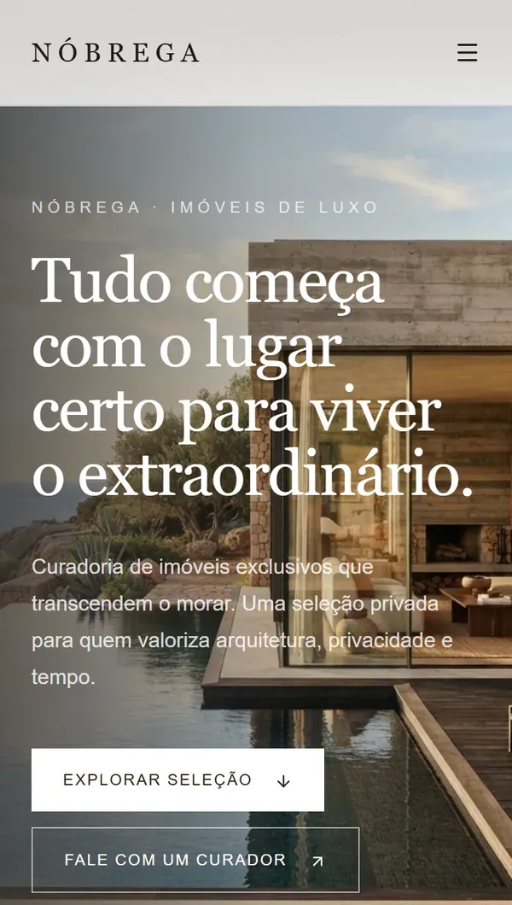
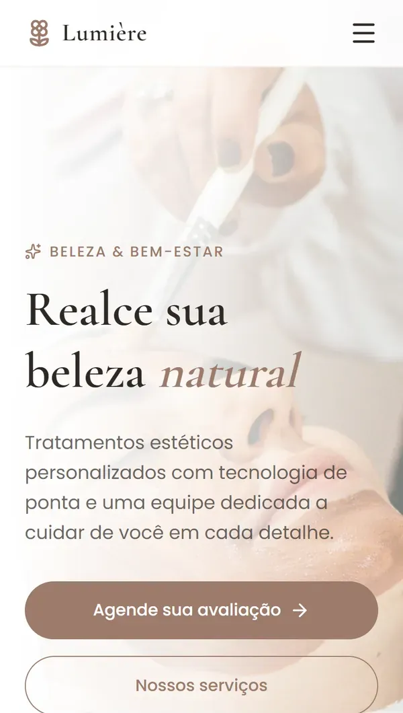

Sites à altura do negócio que você construiu.
Landing pages, sites profissionais e atendimento automático no WhatsApp para negócios que querem passar confiança. Você fala direto comigo, da primeira conversa ao site no ar.
Juan Pablo, desenvolvedor web Goianésia do Pará, PA · online para todo o Brasil
Projetos
Esboços de interface para três negócios que vivem de confiança: uma imobiliária, uma clínica de estética e um escritório de advocacia.
Soluções
Comece pelo problema do seu negócio. A parte técnica fica comigo.
Landing Pages Vai lançar um produto, um serviço ou uma campanha?
Uma página com um único objetivo: fazer a pessoa entender a sua oferta e chamar você. Sem menus que distraem, sem informação sobrando.
O que muda: quem chega pelo anúncio ou pelo Instagram encontra exatamente o que procurava.
Conversar sobre uma landing pageSites Profissionais O seu negócio passa confiança na internet?
Um site completo que mostra quem você é, o que oferece e como falar com você, feito para funcionar bem no celular e no computador.
O que muda: quando alguém pesquisa o seu negócio, encontra uma empresa que parece tão séria quanto ela é.
Conversar sobre um siteSistema de Atendimento 24h Perde cliente quando não consegue responder a tempo?
Um atendimento automático no WhatsApp que responde às dúvidas mais comuns, organiza os pedidos e passa para você o que precisa da sua atenção, a qualquer hora.
O que muda: a mensagem das 23h não fica sem resposta até o dia seguinte.
Conversar sobre atendimento 24hOi! Vocês abrem no sábado?
Oi! Abrimos no sábado, das 9h às 13h. Quer que eu reserve um horário?
Quero, às 10h
Pronto, reservado para sábado às 10h. A confirmação chega por aqui.
Automações Inteligentes Gasta horas com tarefas que se repetem todo dia?
Automatizo tarefas repetitivas do dia a dia, como mensagens, planilhas e avisos, conectando as ferramentas que você já usa com N8N e IA.
O que muda: o tempo gasto copiando e colando volta para o que só você pode fazer.
Conversar sobre automaçõesSoluções Personalizadas Precisa de algo que não existe pronto?
Um sistema ou uma ferramenta pensada para a rotina do seu negócio, do jeito que ele já funciona.
O que muda: a ferramenta se adapta ao seu processo, e não você a ela.
Conversar sobre o seu projetoSobre


Sou Juan Pablo. Crio sites e automações para negócios que querem ser levados a sério na internet.
Penso primeiro em quem vai visitar o seu site: o que essa pessoa precisa entender em poucos segundos e qual é o caminho mais curto até falar com você. O código vem depois, e é responsabilidade minha.
Trabalho sozinho, de propósito. Quem conversa com você é quem desenvolve, então nada se perde entre o que você imaginou e o que vai ao ar.
- Base
- Goianésia do Pará, PA
- Atendimento
- Online, para todo o Brasil
- Contato
- Direto comigo, pelo WhatsApp
- Ferramentas
- HTML, CSS, JavaScript, Node, SQL, APIs REST, IA e N8N
Como trabalho
Quatro etapas, da primeira mensagem ao site no ar.
-
Conversa
Você me conta sobre o negócio e o que precisa, pelo WhatsApp. Eu entendo o objetivo antes de propor qualquer coisa.
-
Planejamento
Defino a estrutura, o conteúdo e o caminho que o seu cliente vai percorrer até falar com você.
-
Desenvolvimento
Construo o site ou a automação. Antes de publicar, você revisa e pede os ajustes que quiser.
-
Entrega
Coloco o projeto no ar e continuo por perto para o suporte depois da entrega.
O que você pode esperar
- Falar direto comigoDo primeiro contato à entrega, sem intermediário.
- Ajustes antes da entregaVocê revisa e pede mudanças antes de publicar.
- Site publicado por mimEu cuido de colocar no ar, com domínio e hospedagem.
- Suporte depois da entregaContinuo disponível quando você precisar ajustar algo.
Seu próximo projeto começa com uma mensagem.
Conte o que o seu negócio precisa. Quem responde sou eu.